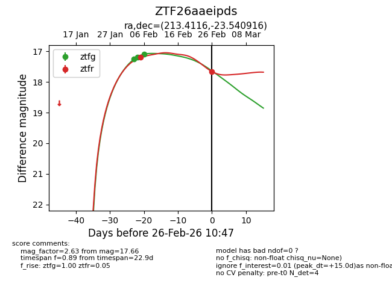
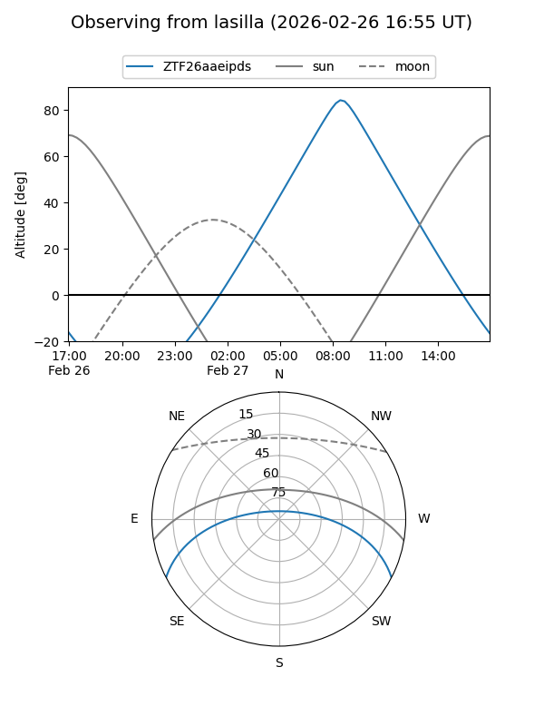
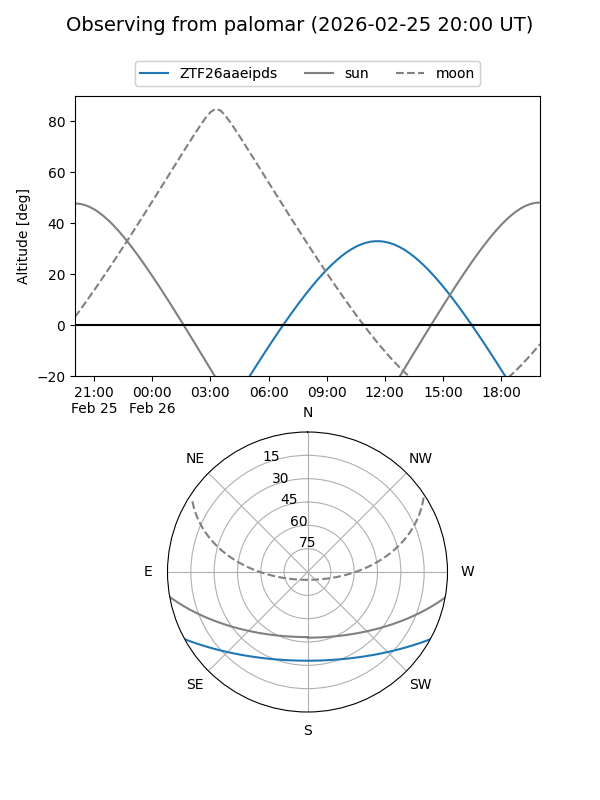
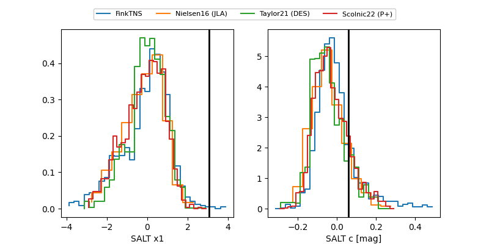

ZTF26aaeipds
Target ZTF26aaeipds at 2026-02-26 10:48
Aliases and brokers:
FINK: link
Lasair: link
ALeRCE: link
alt names
ZTF26aaeipds (ztf,fink_ztf)
Coordinates:
equatorial (ra, dec) = 213.4116,-23.54092
equatorial (HMS+DMS) = 14:13:38.79,-23:32:27.30
galactic (l, b) = (326.2436,+35.58193)
Flags:
Photometry:
last ztfg=17.09, ztfr=17.66
3 ztfg, 2 ztfr detections
Lightcurve

Visibility


Additional plots
